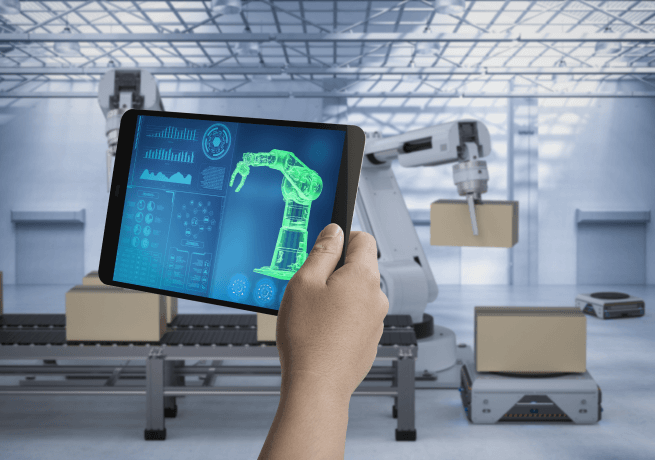

@@include('./pages/includes/head.html', {
pageTitle : 'IT 인프라 | 서비스 - 미라콤아이앤씨',
ogTitle: 'IT 인프라 | 서비스 - 미라콤아이앤씨',
ogDesc: '미라콤아이앤씨는 업종별 특화된 스마트팩토리 환경을 고려하여 비즈니스 맞춤형으로 IT/OT 인프라 설계 및 구축 서비스를 제공합니다.',
metaDescription: '미라콤아이앤씨는 업종별 특화된 스마트팩토리 환경을 고려하여 비즈니스 맞춤형으로 IT/OT 인프라 설계 및 구축 서비스를 제공합니다.',
metaKeywords: 'Miracominc,miracom,미라콤아이앤씨,미라콤,IT인프라,IT,인프라,스마트팩토리,smartfactory,데이터,인프라아키텍처,인프라설계,인프라구축',
ogUrl: 'https://miracom-inc.com',
ogImage: '../../assets/images/og/miracom-og.png',
ogType: 'article',
cssPath : '../../assets/css/common.min.css'
})
@@include('../src/pages/includes/header.html', {
type : 'sub-type',
gnb : true,
subDepth: true,
subArr : ['미라콤아이앤씨', '서비스 및 솔루션', 'IT 인프라']
})
서비스 및 솔루션
IT 인프라
스마트팩토리 구축 경험과 기술력을 바탕으로 최적화된 인프라 설계/구축 서비스
서비스 개요
미라콤아이앤씨는 업종별 특화된 스마트팩토리 환경을 고려하여 비즈니스 맞춤형으로 IT/OT 인프라 설계 및 구축 서비스를 제공합니다.
토탈 IT 인프라 서비스
네트워크, 서버, 데이터베이스, 보안 등 설계/구축 및 운영
HA(고가용성) 설계/구축
이중화 및 DR 구성에 대한 신뢰성 있는 네트워크 등 IT인프라 설계/구축
다양한 레퍼런스 보유
하이테크 등 선진화된 대형 공장에 네트워크 등
IT 인프라 구축 경험 보유
필요성
스마트팩토리 제조 환경에서는 생산, 검사, 물류설비 등에서 대량 데이터가 발생되며 데이터 누실 및 인프라 장애없이 체계적으로 관리하기 위한 최적화된 IT 인프라 환경이 필요합니다.
복잡한 제조 IT/OT 환경의 효율적이고 안정적인 대용량 데이터 관리 필요
최적의 아키텍처 구성으로 IT/OT 비용 절감
변화하는 비즈니스 환경에 빠른 대응
특장점
Point 1.
비즈니스 환경을 고려한 인프라 아키텍쳐 설계 및 구축 서비스

Point 2.
스마트팩토리 구축에 최적화된 토탈 인프라 서비스
Point 3.
무중단 생산 라인을 위한 안정적인 IT/OT 운영 서비스
Point 4.
안전한 운영 환경을 위한 인프라 아키텍처 및 보안 기술 전문가 보유
고객 혜택
고가용성 확보
스마트팩토리 시스템과 인프라 통합 구축 및 유지보수로 장애 및 시행착오를 최소화하여 고가용성을 확보할 수 있습니다.
비즈니스 안정성 제고
데이터 보안, 백업 및 복구, 시스템 모니터링 등과 같은 작업을 통해 시스템 장애 및 데이터 손실 등의 문제를 예방하고, 비즈니스 연속성을 유지할 수 있습니다.
인프라 아키텍처 개선
인프라 아키텍처 신기술 도입과 주기적인 하드웨어, 소프트웨어 업그레이드로
고객사 인프라 환경을 항상 최적화된 환경에서 운영할 수 있습니다.
인프라 운영 비용 효율화
서버, 네트워크, DB, 보안 등 분야별 전문가를 활용하여
고객사 자체 IT/OT 인프라 운영 대비 비용을 효율화할 수 있습니다.
구축 사례
반도체 후공정 전문 기업인 고객사는 사업 확장으로 인하여 사업장을 추가로 구축할 필요가 있었습니다. 신규 사업장에 체계적이고 안정적인 구축에 필요한현장 실사와 고객 요구사항 반영하여 AS-IS 분석부터 인프라 컨설팅/제안 하였으며, 네트워크 기초공사부터 네트워크 구성, 물리/가상화 서버, DB, 보안 솔루션, 백업 솔루션, 모니터링 솔루션 등 고가용성이 보장되는 이중화 구성으로 구축하여 최적화된 인프라 환경을 완성하였습니다.
태양광 글로벌 기업인 고객사는 수요가 늘어남에 따라 라인을 확장해야 하는 상황으로 신규 공장들을 추가로 구축하게 되었습니다. 이에 따른 MES도 추가 확장이 되면서 인프라도 확장하였으며, 네트워크/서버/DB/보안/백업/모니터링 등을 컨설팅/제안/구축하여 최적화된 인프라 환경을 구현하였고, 원격 모니터링 및 운영까지 안정적인 서비스를 제공하고 있습니다.